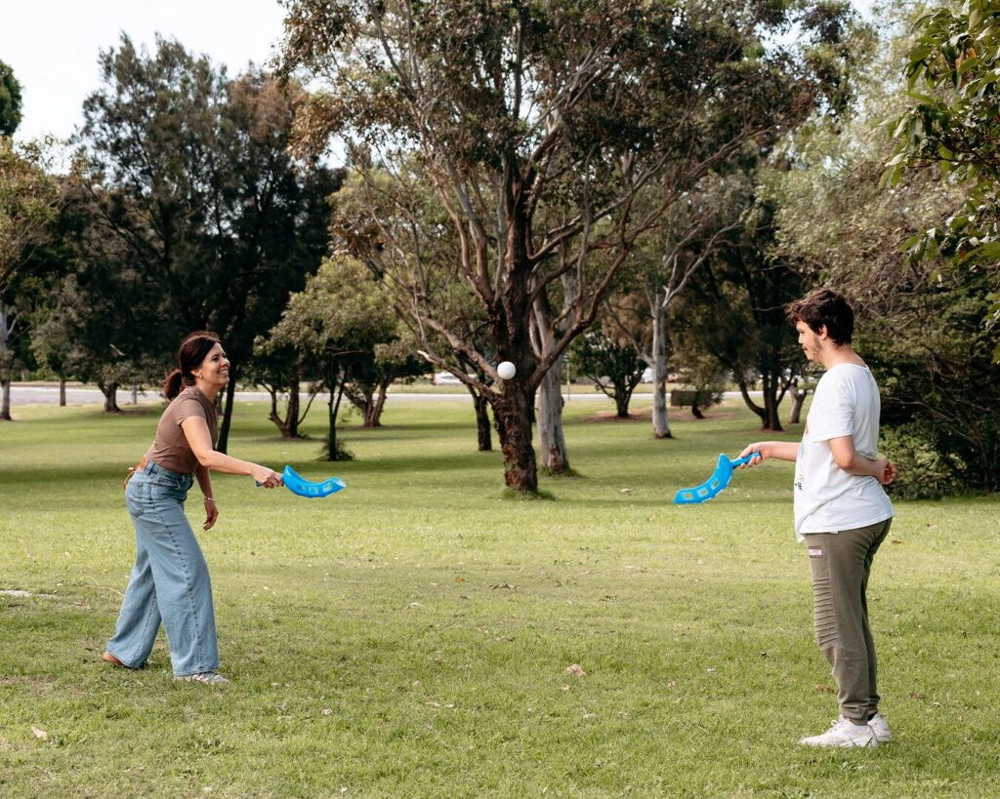

Volunteering is when a person gives their time and skills to support others without being paid. Volunteering can have a positive, fulfilling and rewarding impact on not only your life, but others.
You can volunteer in a way that suits you best, for example based on how much time you have and what you enjoy doing. This could be fundraising or serving a warm meal at a local shelter. You should feel proud of helping, no matter how big or small!

Volunteering can have a big impact on not only your life, but someone else’s life too. As a volunteer, you can:
- Create new friendships.
- Learn new skills.
- Make a difference.
For the person receiving, it can help:
- Meet basic needs like clothing and hygiene.
- Improve happiness, wellbeing and life satisfaction.
- Create a sense of belonging in the community.
If you would like to volunteer, here are some ideas:
- Op-shop
- Landcare
- Service Groups
- Resident Committees
- Shelters
- Food Charities
- Not for Profit organisations